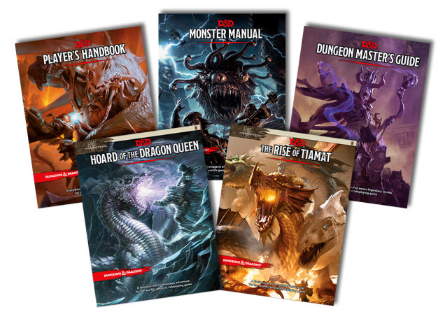

O que é RPG de mesa ?
O RPG de mesa, ou RPG de papel e caneta, é um jogo que lembra muito os clássicos jogos de tabuleiro, porém com possibilidades mais amplas. Do inglês, a sigla RPG significa "Role Playing Game", um jogo de interpretar papéis. Neste caso o jogador não é apenas um pino andando em casas de um tabuleiro, ele interpreta um personagem, com emoções, falas e habilidades enquanto atravessa um mundo fantástico. Ensinaremos aqui como jogar RPG de mesa.
Vale a pena fazer uma ressalva para que jogadores de videogame não confundam o RPG de Mesa com alguns dos melhores RPGs de videogame, como a série Final Fantasy, The Elder Scrolls ou Dragon Age. Estes são considerados RPGs eletrônicos, os quais às vezes têm algumas semelhanças com os combates do RPG de mesa, porém não possuem o principal que é a liberdade e interpretação.
Devido à sua natureza tão dinâmica, o RPG precisa de uma figura que a maioria dos jogos de tabuleiro não tem: o mestre de jogo. Essa pessoa age como um narrador que conta a história e um juiz que irá viabilizar as ideias dos jogadores de acordo com as regras permitidas pelo mundo em que estão jogando.
Sistemas de jogos de RPG de mesa
A primeira escolha que jogadores precisam definir é qual sistema irão jogar, pois há uma infinidade deles. Cada sistema é o seu próprio jogo, com seu próprio mundo e regras. Escolher o sistema seria uma decisão equivalente ao grupo decidir se pretende jogar Xadrez, Damas, Jogo da Vida ou Banco Imobiliário.
Alguns dos mais famosos sistemas de RPG são: Dungeons & Dragons, Vampiro: A Máscara, Cyberpunk 2020 (base de Cyberpunk 2077), O Chamado de Cthulhu, GURPS, Pathfinder, 3D&T, 7º Mar, Daemon, Deadlands, entre incontáveis outros. Não é preciso ficar intimidado com a quantidade de escolhas, basta utilizar o mais clássico como uma porta de entrada: Dungeons & Dragons, e depois explorar outros conforme achar interessante.
Cada sistema costuma ter seus próprios livros. Para começar a jogar é preciso ter um livro do Mestre, que ensinará as regras do mundo e de suas possibilidades para o mestre, e um livro do jogador, que ensinará aos jogadores quem eles podem ser e o que podem fazer nesse mundo. Em algumas ocasiões, o mesmo livro prepara tanto mestre quanto jogador.